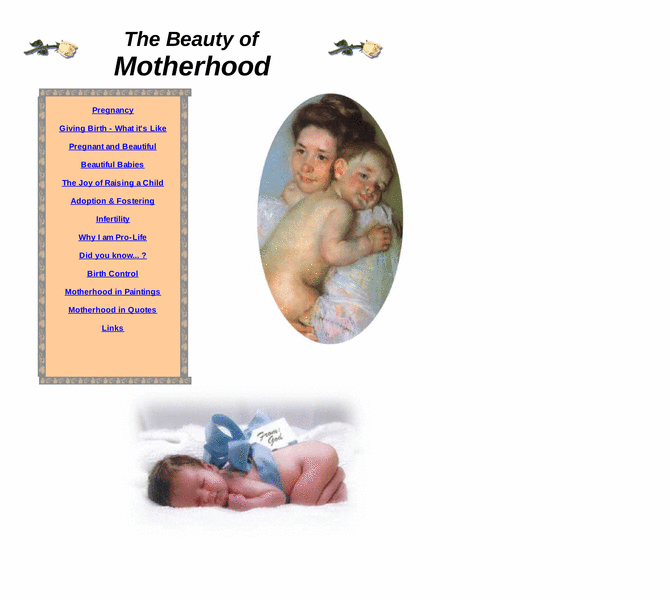

Previewing: The Beauty of Motherhood Previewing: The Beauty of Motherhood 
Use the left/right red arrow controls to navigate through this ring - Click the preview image to visit the member site.

Writings, Information, Photos, and more, on the joy of being a mother. Includes pregnancy information, and the story of my daughter's birth. Created by a young stay-at-home mom.
The Beauty of Motherhood owned by:
 a_mother a_mother
A member of the original webring since 02/07/2005.
|
|